Portofolio
Portofolio
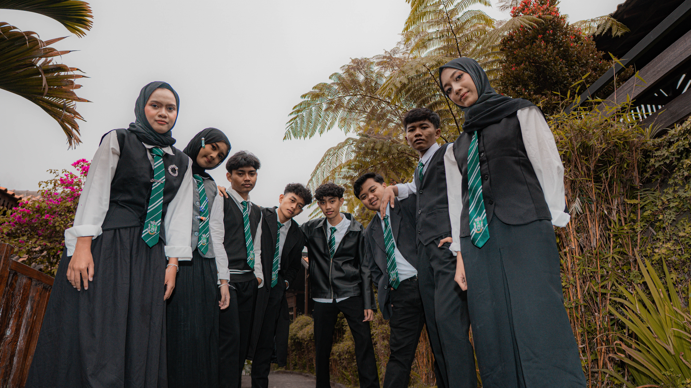
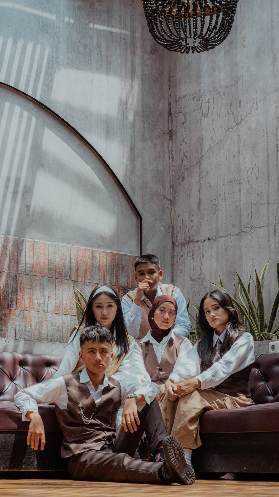


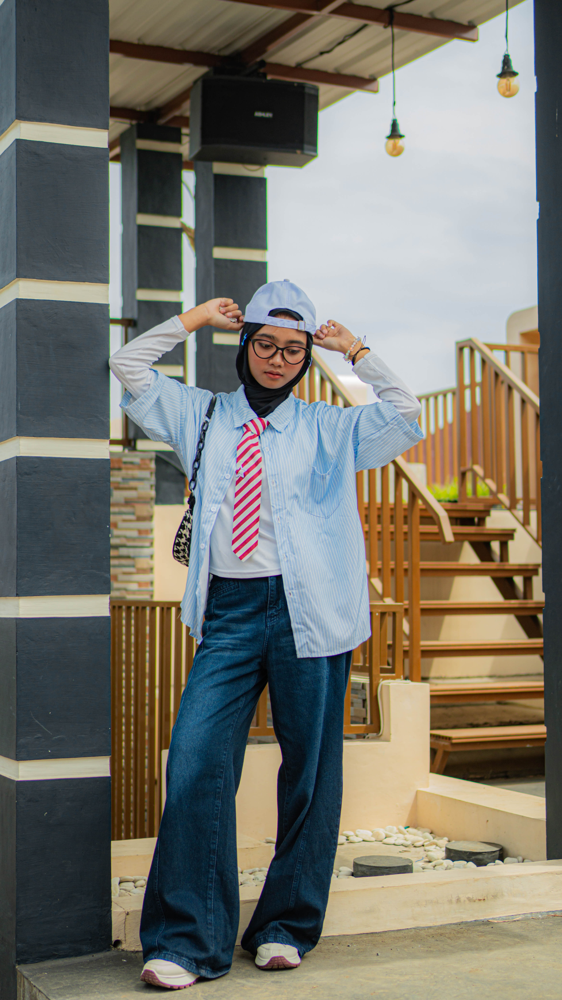
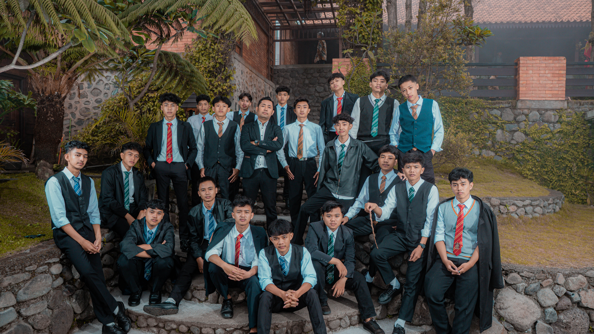
Moodboards
Visual inspiration for each package style / Inspirasi visual untuk setiap gaya paket
GOLDEN-MOODBOARD
Premium yearbook and group photography aesthetic
Estetika fotografi yearbook dan grup premium
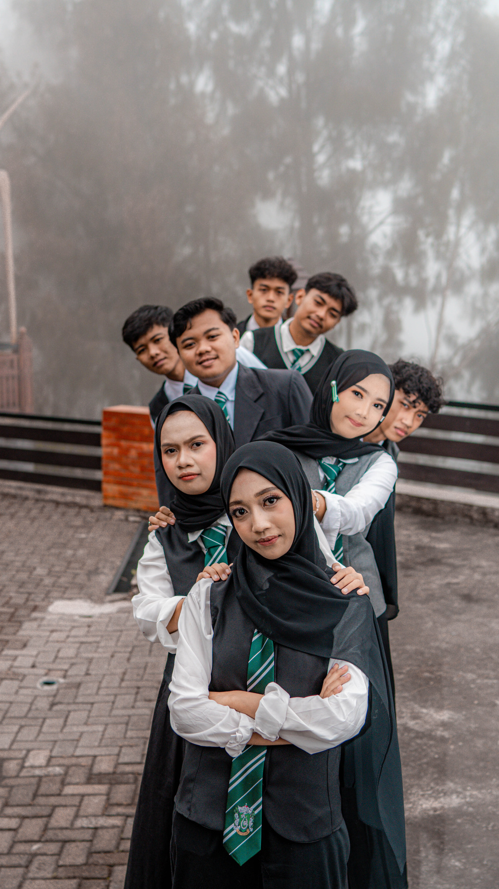

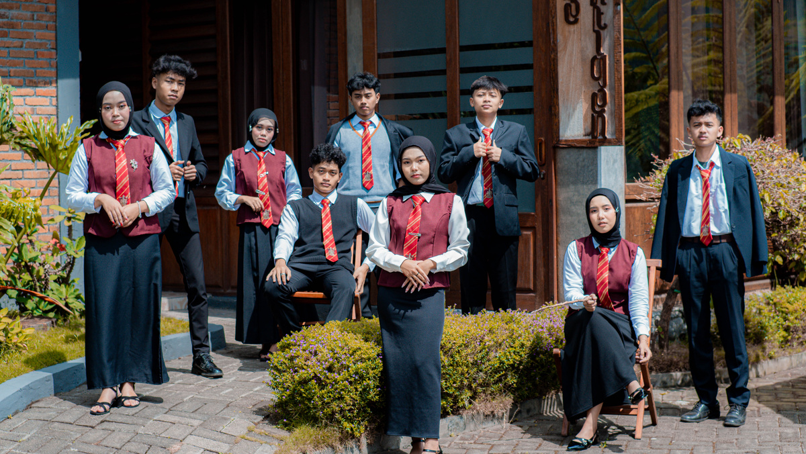
SIGNATURE-MOODBOARD
Classic and timeless group portrait style
Gaya potret grup klasik dan abadi
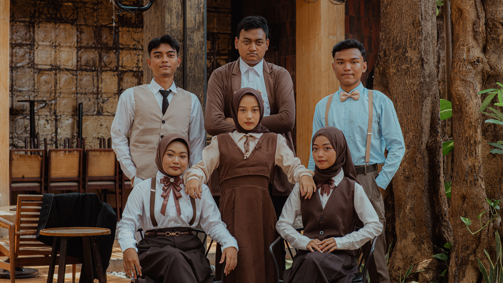
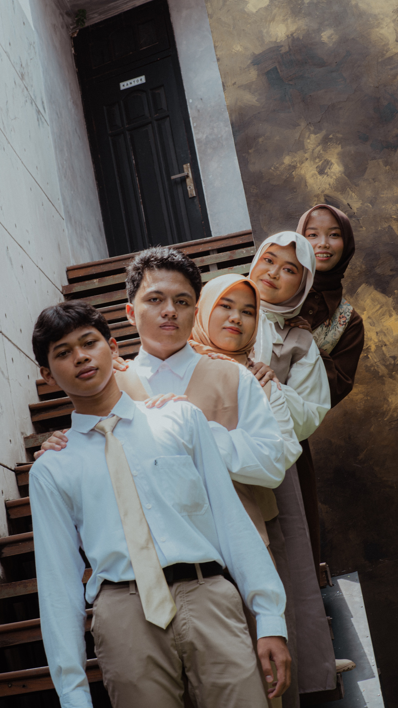
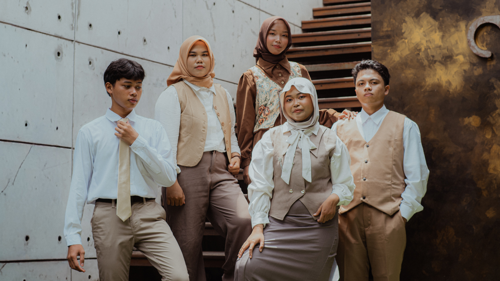
EXCELLENT-MOODBOARD
Contemporary and lifestyle-oriented photography
Fotografi kontemporer dan berorientasi gaya hidup
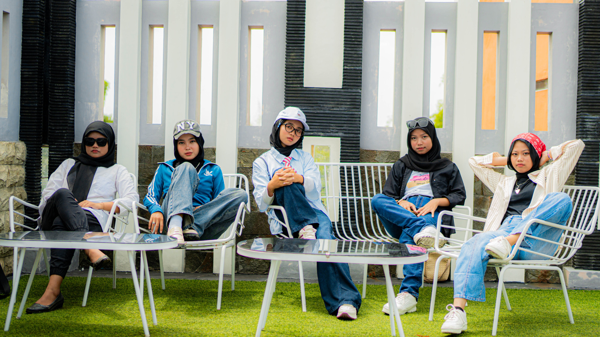
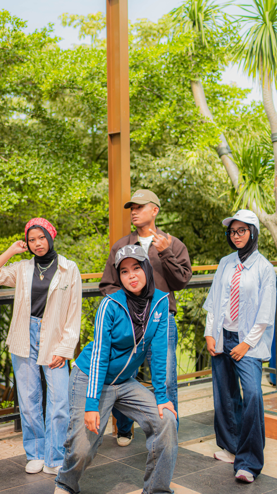
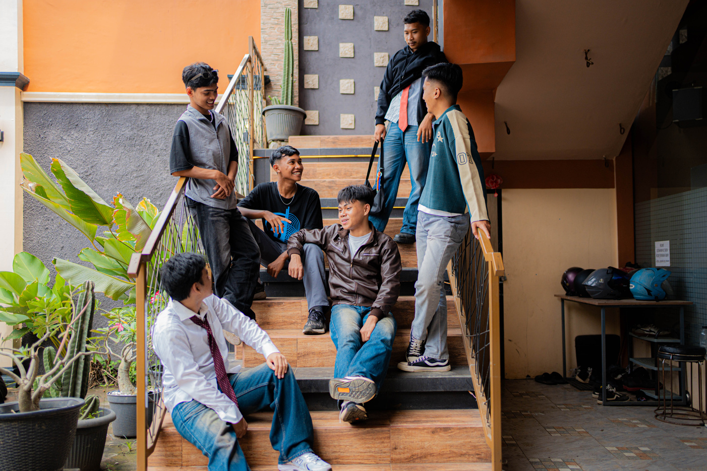
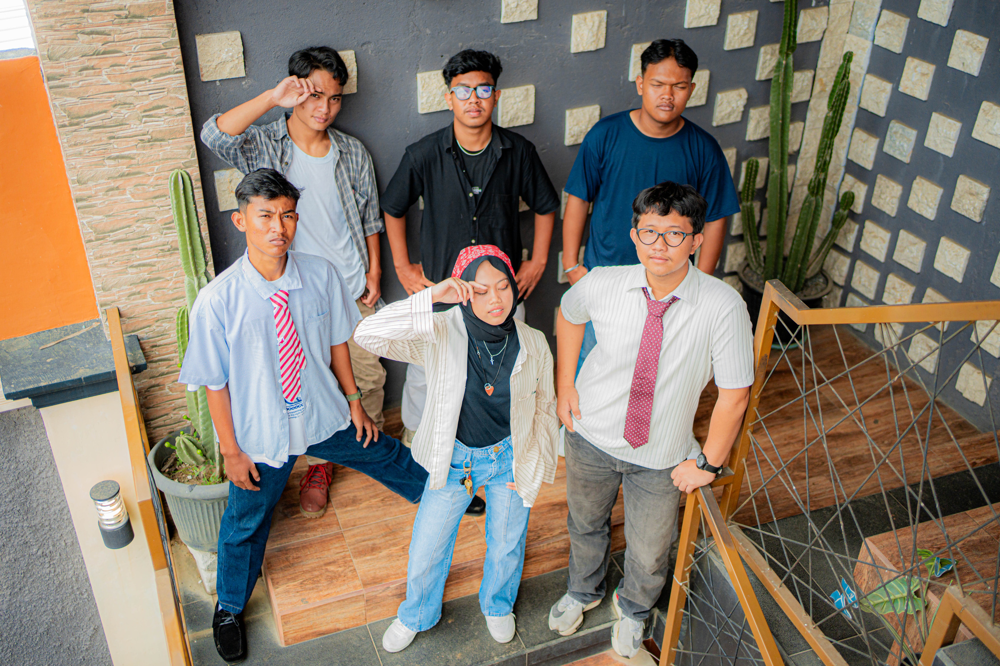
Like What You See? / Suka Dengan Apa Yang Anda Lihat?
Book your session now and let's create amazing memories together!
Pesan sesi Anda sekarang dan mari ciptakan kenangan luar biasa bersama!